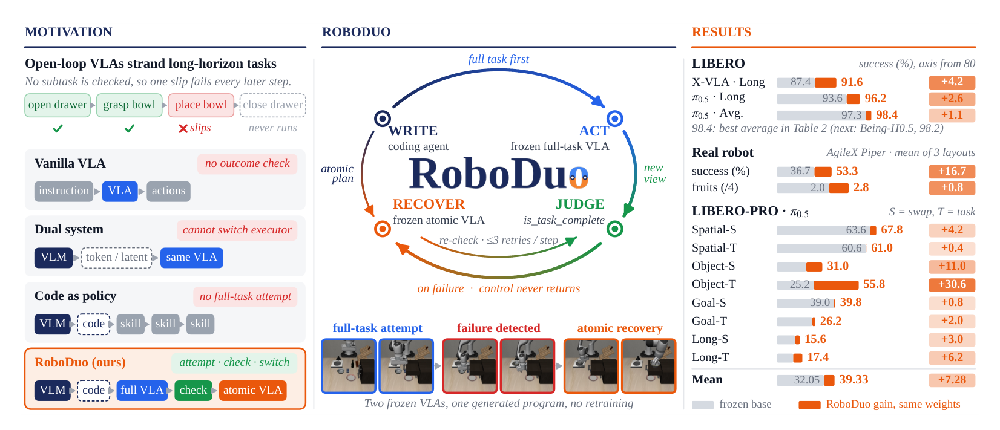
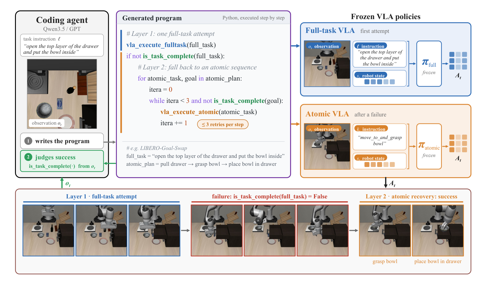
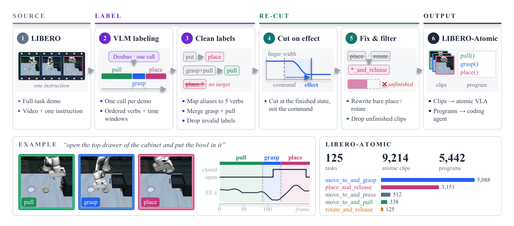
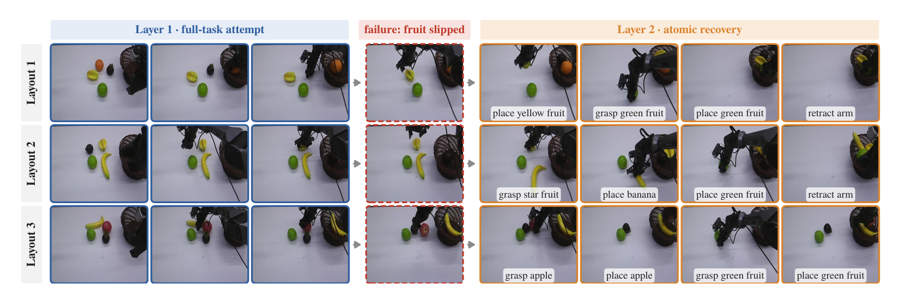

Vision-Language-Action (VLA) models map a language instruction and the current observation directly to actions, without checking whether the instruction has been completed. For long-horizon tasks, a single failed step therefore goes unnoticed and leaves the whole task unfinished. Such failed episodes, however, often end with the task partially complete. Moreover, the unfinished steps are reusable atomic skills that recur across demonstrations. A failed attempt can thus be recovered by composing with atomic skills. We propose RoboDuo, a closed-loop dual-system framework that uses code as the interface between a coding agent and two VLAs. The agent writes a program that lets a full-task VLA attempt the whole task and checks whether it is complete; on failure, an atomic VLA finishes the remaining steps. Since the agent emits no actions and only decides which VLA for execution, RoboDuo wraps an existing full-task VLA without updating its weights. To train the atomic VLA and the coding agent with the completion-checking ability, we build LIBERO-Atomic, LIBERO-Code, and LIBERO-Judge from a single set of LIBERO demonstrations. RoboDuo consistently improves X-VLA and π0.5 on LIBERO and LIBERO-PRO, with the largest gains on long-horizon tasks, and recovers failed rollouts of a frozen full-task VLA on a real robot.

Throughout a rollout a VLA is re-queried on the latest observation, yet execution stays open-loop with respect to subtask outcomes: nothing checks whether a subtask has succeeded. If an object slips from the gripper, the post-slip state is absent from the demonstrations, and the policy does not re-grasp. On a long-horizon task, one failed subtask leaves every later step unfinished.
The full-task VLA should still make the first attempt. The recovery loop outside the large model should close only after that attempt fails.
Code can supervise two frozen policies without emitting actions: attempt with the full-task VLA, check completion, then recover with an atomic VLA.
is_task_complete reads the new observation. On failure, the agent plans remaining steps as atomic instructions and hands each to a frozen atomic VLA, with at most three attempts per step.

is_task_complete returns false, Layer 2 runs an atomic plan with πatomic, retrying each step at most three times. Both policies stay frozen, so the same program wraps X-VLA and π0.5. The bottom row is one LIBERO-Goal-Swap rollout: after the full-task attempt fails, the atomic VLA grasps the bowl and places it in the drawer.
is_task_complete(·) verifies the full goal or each atomic sub-goal on the new observation.

| Primitive | Role | Calls |
|---|---|---|
move_to_and_grasp |
Approach and grasp an object | 11,643 |
place_and_release |
Place a held object, then release | 8,403 |
move_to_and_pull |
Pull a drawer or door open | 1,052 |
rotate_and_release |
Rotate a held knob, then release | 488 |
move_to_and_press |
Push a drawer or door shut, or press a button | 185 |
RoboDuo improves both frozen backbones without lowering any suite. Under four-suite training, X-VLA rises from 95.25 to 96.40 (Long: 87.4 → 91.6) and π0.5 from 97.25 to 98.40 (Long: 93.6 → 96.2). On Long, that removes 33% of X-VLA's failures and 41% of π0.5's. Under five-suite training the bases are already stronger, so the gains shrink to X-VLA 97.65 → 97.95 and π0.5 98.30 → 98.45, again mainly on Long.
| Method | Spatial | Object | Goal | Long | Avg. |
|---|---|---|---|---|---|
| π0 | 98.0 | 96.8 | 94.4 | 88.4 | 94.4 |
| π0.5 | 98.8 | 98.2 | 98.0 | 92.4 | 96.9 |
| InternVLA-M1 | 98.0 | 99.0 | 93.8 | 92.6 | 95.9 |
| GR00T-N1.7 | 97.7 | 98.5 | 97.5 | 94.4 | 97.0 |
| OpenVLA-OFT | 97.6 | 98.4 | 97.9 | 94.5 | 97.1 |
| Fast-WAM | 98.2 | 100.0 | 97.0 | 95.2 | 97.6 |
| Motus | 96.8 | 99.8 | 96.6 | 97.6 | 97.7 |
| Being-H0.5 | 99.2 | 98.2 | 99.0 | 96.2 | 98.2 |
| Four-suite training (our evaluation) | |||||
| X-VLA (reproduced) | 96.2 | 99.6 | 97.8 | 87.4 | 95.25 |
| RoboDuo + X-VLA | 96.6 | 99.6 | 97.8 | 91.6 | 96.40 |
| π0.5 (reproduced) | 99.4 | 98.0 | 98.0 | 93.6 | 97.25 |
| RoboDuo + π0.5 | 99.6 | 99.0 | 98.8 | 96.2 | 98.40 |
| Five-suite training (our evaluation) | |||||
| X-VLA (reproduced) | 97.2 | 99.0 | 98.6 | 95.8 | 97.65 |
| RoboDuo + X-VLA | 97.4 | 99.2 | 98.6 | 96.6 | 97.95 |
| π0.5 (reproduced) | 99.4 | 99.8 | 98.6 | 95.4 | 98.30 |
| RoboDuo + π0.5 | 99.4 | 99.8 | 98.6 | 96.0 | 98.45 |
The same checkpoints are tested zero-shot under position swap (S) and task (T) perturbations. Under four-suite training, RoboDuo raises the eight-condition mean of π0.5 from 32.05 to 39.33. The largest gains are Object-T (+30.6, 25.2 → 55.8) and Object-S (+11.0). X-VLA moves only from 4.95 to 5.70: conditions where its base is zero stay at or below 0.4. Under five-suite training, π0.5 rises from 43.58 to 45.68, again led by Object-T (32.2 → 42.2), and X-VLA from 7.25 to 8.50. No cell falls below its base.
| Method | Spatial-S | Spatial-T | Object-S | Object-T | Goal-S | Goal-T | Long-S | Long-T | Mean |
|---|---|---|---|---|---|---|---|---|---|
| OpenVLA | 0.0 | 0.0 | 0.0 | 0.0 | 0.0 | 0.0 | 0.0 | 0.0 | 0.00 |
| π0 | 0.0 | 0.0 | 0.0 | 0.0 | 0.0 | 0.0 | 0.0 | 0.0 | 0.00 |
| π0.5 | 20.0 | 1.0 | 17.0 | 1.0 | 38.0 | 0.0 | 8.0 | 1.0 | 10.75 |
| MolmoAct | 0.0 | 0.0 | 6.0 | 0.0 | 0.0 | 0.0 | 0.0 | 6.0 | 1.50 |
| NORA | 0.0 | 0.0 | 0.0 | 0.0 | 0.0 | 0.0 | 0.0 | 0.0 | 0.00 |
| X-VLA | 0.0 | 0.0 | 2.0 | 8.0 | 1.0 | 9.0 | 0.0 | 10.0 | 3.75 |
| Four-suite training (our evaluation) | |||||||||
| X-VLA (reproduced) | 0.0 | 18.0 | 0.0 | 0.0 | 2.6 | 9.2 | 0.0 | 9.8 | 4.95 |
| RoboDuo + X-VLA | 0.2 | 18.0 | 0.0 | 0.0 | 3.2 | 10.2 | 0.4 | 13.6 | 5.70 |
| π0.5 (reproduced) | 63.6 | 60.6 | 20.0 | 25.2 | 39.0 | 24.2 | 12.6 | 11.2 | 32.05 |
| RoboDuo + π0.5 | 67.8 | 61.0 | 31.0 | 55.8 | 39.8 | 26.2 | 15.6 | 17.4 | 39.33 |
| Five-suite training (our evaluation) | |||||||||
| X-VLA (reproduced) | 2.0 | 16.0 | 2.0 | 6.0 | 0.0 | 12.0 | 0.0 | 20.0 | 7.25 |
| RoboDuo + X-VLA | 2.0 | 18.0 | 4.0 | 6.0 | 0.0 | 12.0 | 0.0 | 26.0 | 8.50 |
| π0.5 (reproduced) | 70.0 | 55.0 | 49.2 | 32.2 | 44.2 | 34.6 | 13.6 | 49.8 | 43.58 |
| RoboDuo + π0.5 | 71.6 | 55.0 | 50.8 | 42.2 | 45.4 | 35.0 | 15.2 | 50.2 | 45.68 |
The frozen π0.5 policies and the retry budget stay fixed; only the coding agent changes. Every agent raises the eight-condition mean, and the mean varies by up to 5.8 points across agents. Under four-suite training the fine-tuned agent reaches 39.33, GPT 41.50, and GPT + TAMP 43.00. Under five-suite training the same order holds: 45.68, 49.75, and 51.50. GPT cells use 50 episodes per cell, so gaps of a few points are trends rather than a strict ranking.
| Coding agent | Spatial-S | Spatial-T | Object-S | Object-T | Goal-S | Goal-T | Long-S | Long-T | Mean-6 | Mean-8 |
|---|---|---|---|---|---|---|---|---|---|---|
| Cap-X | 12.0 | 14.0 | 22.0 | 18.0 | 26.0 | 17.0 | – | – | 18.17 | – |
| Pigey | 66.0 | 80.0 | 54.0 | 54.0 | 44.0 | 22.0 | – | – | 53.33 | – |
| Four-suite training (our evaluation) | ||||||||||
| None (frozen π0.5) | 63.6 | 60.6 | 20.0 | 25.2 | 39.0 | 24.2 | 12.6 | 11.2 | 38.77 | 32.05 |
| LIBERO-Code fine-tuned | 67.8 | 61.0 | 31.0 | 55.8 | 39.8 | 26.2 | 15.6 | 17.4 | 46.93 | 39.33 |
| GPT | 68.0 | 60.0 | 36.0 | 54.0 | 38.0 | 34.0 | 20.0 | 22.0 | 48.33 | 41.50 |
| GPT + TAMP | 74.0 | 64.0 | 30.0 | 54.0 | 40.0 | 36.0 | 20.0 | 26.0 | 49.67 | 43.00 |
| Five-suite training (our evaluation) | ||||||||||
| None (frozen π0.5) | 70.0 | 55.0 | 49.2 | 32.2 | 44.2 | 34.6 | 13.6 | 49.8 | 47.53 | 43.58 |
| LIBERO-Code fine-tuned | 71.6 | 55.0 | 50.8 | 42.2 | 45.4 | 35.0 | 15.2 | 50.2 | 50.00 | 45.68 |
| GPT | 72.0 | 56.0 | 60.0 | 54.0 | 48.0 | 38.0 | 16.0 | 54.0 | 54.67 | 49.75 |
| GPT + TAMP | 76.0 | 58.0 | 60.0 | 48.0 | 58.0 | 42.0 | 20.0 | 50.0 | 57.00 | 51.50 |
On a bimanual AgileX Piper, the same controller arranges fruit across three layouts. Pooled over 10 trials per layout, success rises from 36.7% (11/30) to 53.3% (16/30), and the mean number of fruits in the basket from 2.0 to 2.8. Neither VLA is updated on the robot.

| Layout | Method | Success (%) | Fruits (/4) |
|---|---|---|---|
| 1 | Full-task VLA | 40 | 2.4 |
| 1 | RoboDuo | 60 | 3.0 |
| 2 | Full-task VLA | 30 | 1.9 |
| 2 | RoboDuo | 60 | 2.8 |
| 3 | Full-task VLA | 40 | 1.8 |
| 3 | RoboDuo | 40 | 2.6 |
Simulation and real-robot demos will be added here. Drop videos into static/videos/ and replace the placeholders below.
If you find this work useful, please cite our paper:
@misc{wang2026roboduo,
title={RoboDuo: Attempt, Check and Atomic Recovery through Code for Vision-Language-Action Models},
author={Jie Wang and Bo Zhang and Renzhi Lu and Jianyu Chen},
year={2026},
eprint={2610.34108},
archivePrefix={arXiv},
primaryClass={cs.RO},
url={https://arxiv.org/abs/2610.34108}
} RoboDuo: Attempt, Check and Atomic Recovery through Code for Vision-Language-Action Models
RoboDuo: Attempt, Check and Atomic Recovery through Code for Vision-Language-Action Models